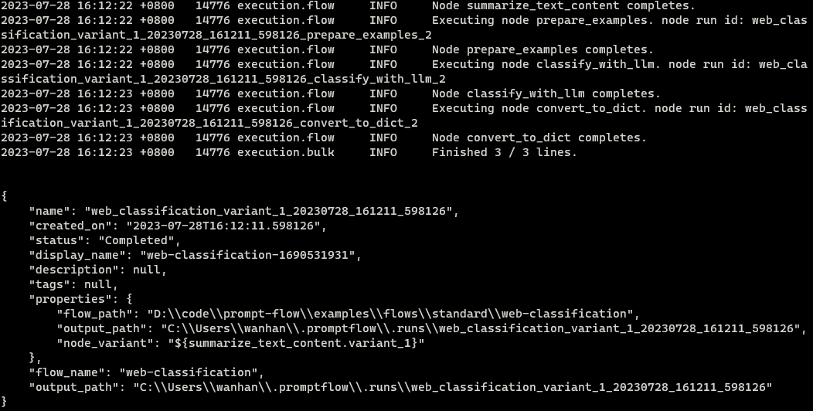
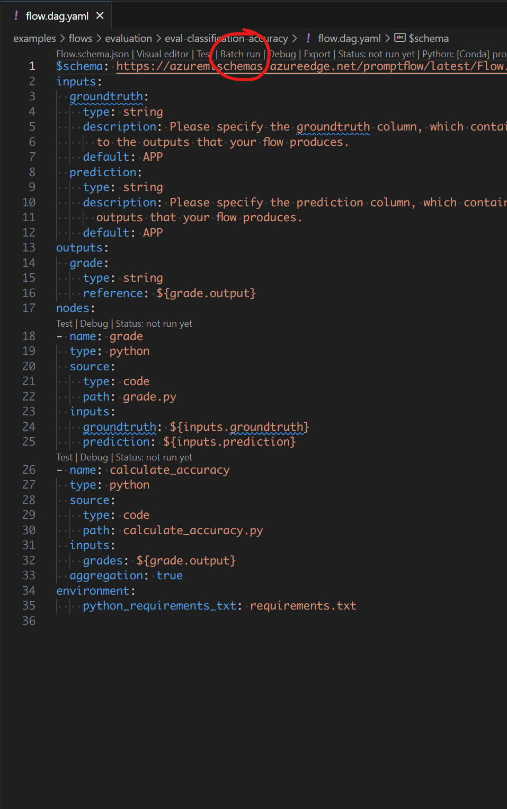
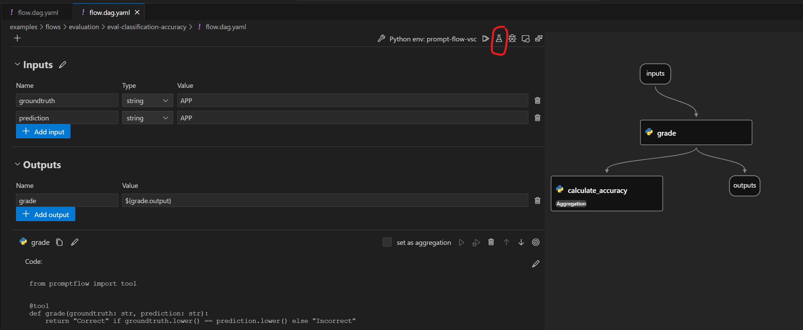
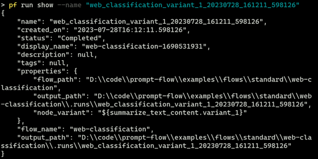
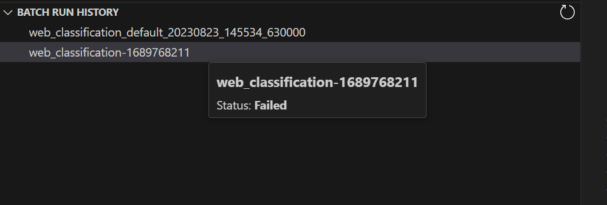
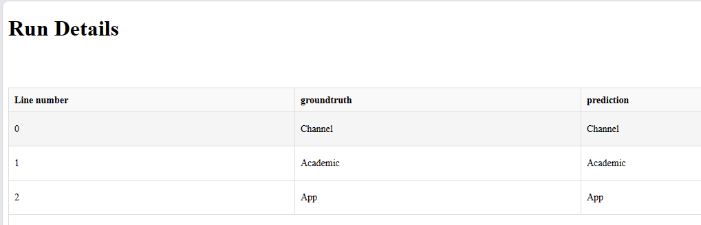
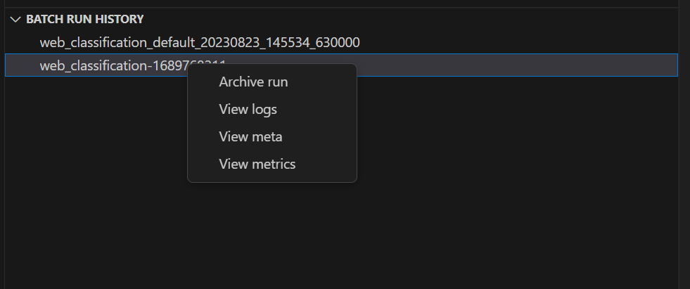
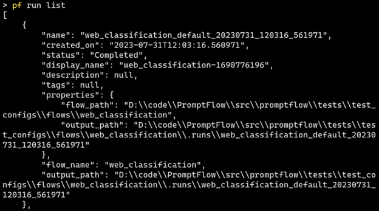
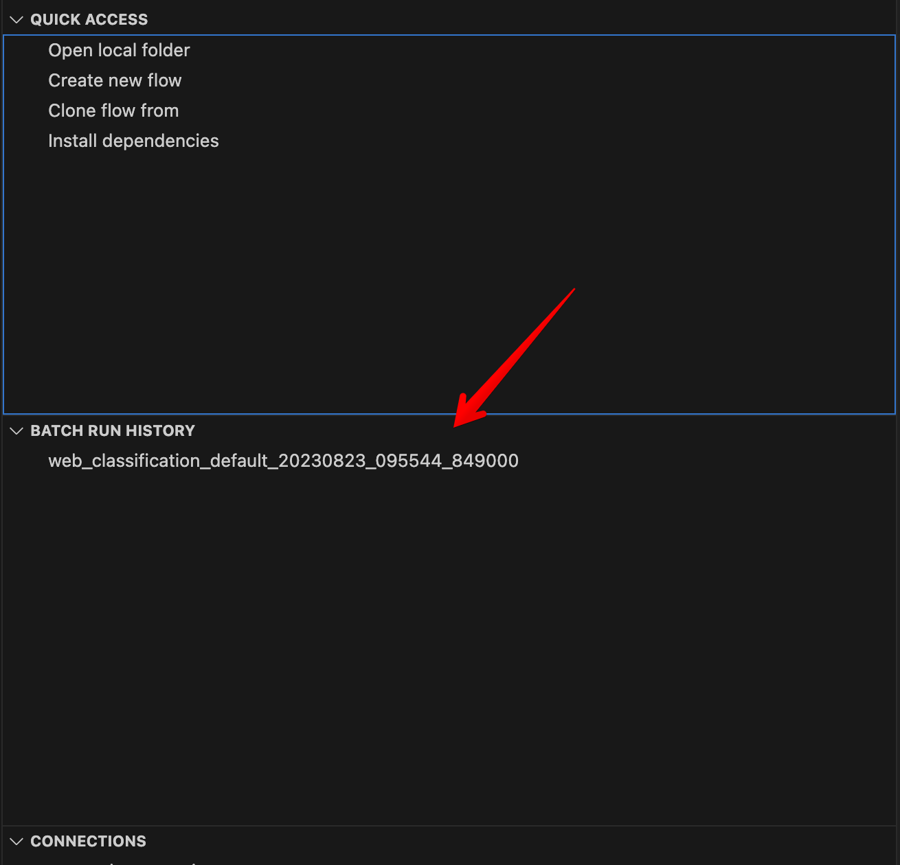

Manage runs#
Experimental feature
This is an experimental feature, and may change at any time. Learn more.
This documentation will walk you through how to manage your runs with CLI, SDK and VS Code Extension.
In general:
For
CLI, you can runpf/pfazure run --helpin terminal to see the help messages.For
SDK, you can refer to Promptflow Python Library Reference and checkPFClient.runsfor more run operations.
Let’s take a look at the following topics:
Create a run#
To create a run against bulk inputs, you can write the following YAML file.
$schema: https://azuremlschemas.azureedge.net/promptflow/latest/Run.schema.json
flow: ../web_classification
data: ../webClassification1.jsonl
column_mapping:
url: "${data.url}"
variant: ${summarize_text_content.variant_0}
To create a run against existing run, you can write the following YAML file.
$schema: https://azuremlschemas.azureedge.net/promptflow/latest/Run.schema.json
flow: ../classification_accuracy_evaluation
data: ../webClassification1.jsonl
column_mapping:
groundtruth: "${data.answer}"
prediction: "${run.outputs.category}"
run: <existing-flow-run-name>
Reference here for detailed information for column mapping. You can find additional information about flow yaml schema in Run YAML Schema.
After preparing the yaml file, use the CLI command below to create them:
# create the flow run
pf run create -f <path-to-flow-run>
# create the flow run and stream output
pf run create -f <path-to-flow-run> --stream
The expected result is as follows if the run is created successfully.

Using SDK, create Run object and submit it with PFClient. The following code snippet shows how to import the required class and create the run:
from promptflow import PFClient
from promptflow.entities import Run
# Get a pf client to manage runs
pf = PFClient()
# Initialize an Run object
run = Run(
flow="<path-to-local-flow>",
# run flow against local data or existing run, only one of data & run can be specified.
data="<path-to-data>",
run="<existing-run-name>",
column_mapping={"url": "${data.url}"},
variant="${summarize_text_content.variant_0}"
)
# Create the run
result = pf.runs.create_or_update(run)
print(result)
You can click on the actions on the top of the default yaml editor or the visual editor for the flow.dag.yaml files to trigger flow batch runs.
 
Get a run#
Get a run in CLI with JSON format.
pf run show --name <run-name>

Show run with PFClient
from promptflow import PFClient
# Get a pf client to manage runs
pf = PFClient()
# Get and print the run
run = pf.runs.get(name="<run-name>")
print(run)

Show run details#
Get run details with TABLE format.
pf run show --name <run-name>

Show run details with PFClient
from promptflow import PFClient
from tabulate import tabulate
# Get a pf client to manage runs
pf = PFClient()
# Get and print the run-details
run_details = pf.runs.get_details(name="<run-name>")
print(tabulate(details.head(max_results), headers="keys", tablefmt="grid"))
Show run metrics#
Get run metrics with JSON format.
pf run show-metrics --name <run-name>

Show run metrics with PFClient
from promptflow import PFClient
import json
# Get a pf client to manage runs
pf = PFClient()
# Get and print the run-metrics
run_details = pf.runs.get_metrics(name="<run-name>")
print(json.dumps(metrics, indent=4))
Visualize a run#
Visualize run in browser.
pf run visualize --name <run-name>
A browser will open and display run outputs.

Visualize run with PFClient
from promptflow import PFClient
# Get a pf client to manage runs
pf = PFClient()
# Visualize the run
client.runs.visualize(name="<run-name>")
On the VS Code primary sidebar > the prompt flow pane, there is a run list. It will list all the runs on your machine. Select one or more items and click the “visualize” button on the top-right to visualize the local runs.

List runs#
List runs with JSON format.
pf run list

List with PFClient
from promptflow import PFClient
# Get a pf client to manage runs
pf = PFClient()
# list runs
runs = pf.runs.list()
print(runs)
On the VS Code primary sidebar > the prompt flow pane, there is a run list. It will list all the runs on your machine. Hover on it to view more details. 
Update a run#
Get run metrics with JSON format.
pf run update --name <run-name> --set display_name=new_display_name
Update run with PFClient
from promptflow import PFClient
# Get a pf client to manage runs
pf = PFClient()
# Get and print the run-metrics
run = pf.runs.update(name="<run-name>", display_name="new_display_name")
print(run)
Archive a run#
Archive the run so it won’t show in run list results.
pf run archive --name <run-name>
Archive with PFClient
from promptflow import PFClient
# Get a pf client to manage runs
pf = PFClient()
# archive a run
client.runs.archive(name="<run-name>")
Restore a run#
Restore an archived run so it can show in run list results.
pf run restore --name <run-name>
Restore with PFClient
from promptflow import PFClient
# Get a pf client to manage runs
pf = PFClient()
# restore a run
client.runs.restore(name="<run-name>")